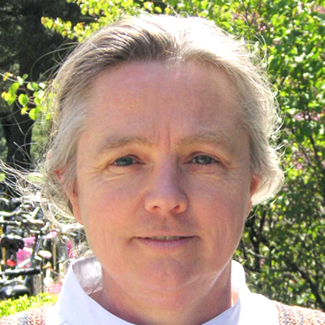
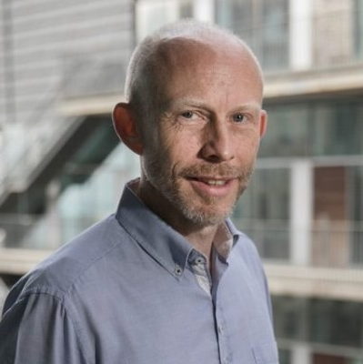

Speakers
Susan Holmes
Professor of Statistics, Stanford University, USA
Brought up in the French School of Data Analysis (Analyse des Données) in the 1980’s, Susan Holmes is a Data Scientist specialized in exploring and visualizing complex biological data. She is interested in integrating the information provided by phylogenetic trees, community interaction graphs and metabolic networks with sequencing data and clinical covariates. She uses computational statistics, in particular, nonparametric computer intensive methods such as the bootstrap and MCMC to draw inferences about many complex biological phenomena, interactions between the immune system and cancer, resilience and biomarker detection in the human microbiome and drug resistance in HIV. Her research group has developed open-source software implementing these methods, such as phyloseq and DADA2, which are freely available at the Bioconductor project for more than 10 years, and have become very popular among scientists analysing microbiome data. Susan enjoys teaching using R and Bioconductor and tries to make everything she does freely available.

James Sharpe
Group Leader & Head of Outstation, EMBL Barcelona, Spain
James Sharpe is currently head of EMBL Barcelona and principal investigator of the group on Multicellular Systems Biology. The goal of his group is to understand how the activities of gene networks controls the millions of cells which make up our organs – allowing them to communicate with each other, to decide what to do at each moment during embryo development: whether to divide, which way to move, and which cells types to become (cartilage, bone, connective tissue, etc.). Their approach is to integrate information into a computer model, and to this end Sharpes’s research group develops new imaging and computational methods to understand one example of organogenesis – vertebrate limb development.

Maria Brbic
Tenure Track Assistant Professor, EPFL, Switzerland
Maria Brbic (https://brbiclab.epfl.ch) is is an Assistant Professor of Computer Science and Life Sciences at EPFL. She is also affiliated with the EPFL AI Center and EPFL Institute of Bioengineering (IBI). Prior to joining EPFL, Maria was a postdoctoral researcher in Computer Science at Stanford University working with Jure Leskovec and was a member of the Chan Zuckerberg Biohub at Stanford. She received her PhD degree from University of Zagreb in 2019, while also researching at Stanford University and University of Tokyo. Her research was awarded with the Fulbright Scholarship, L’Oreal UNESCO for Women in Science Scholarship, Branimir Jernej award for outstanding publication in biology and biomedicine, and Josip Loncar Silver Plaque award for the best doctoral dissertation. She has been named a Rising Star in EECS by MIT in 2021 and received Early Career Award by SIB in 2023. Her research is focused on developing new machine learning methods and applying her methods to advance biomedical research.

Jacques Serizay
Postdoctoral Fellow, Institut Pasteur, Paris, France
Jacques Serizay is a computational biologist at the Institut Pasteur, Paris, focusing on leveraging large-scale sequencing data to uncover the complexities of chromatin structure, gene regulation, and epigenetic modifications. He received his Ph.D. from the University of Cambridge, where he investigated tissue-specific chromatin organization and transcriptional regulation in Caenorhabditis elegans. His postdoctoral research at the Institut Pasteur further explores the interplay between sequence composition and chromatin architecture in controlling gene regulation.
Jacques’ research aims to elucidate how these molecular mechanisms influence gene expression during development and in synthetic biological systems. In addition to his scientific contributions, Jacques is actively involved in the development of advanced software tools to support the integration and analysis of large-scale genomic data. He is the author of the online book “Orchestrating Hi-C analysis with Bioconductor” and has developed several Python and Bioconductor packages for Hi-C and epigenomic data analysis. As an active member of the tidyomics group, he also contributes to the development of a tidy ecosystem for genomics.

Helena Crowell
Postdoctoral Fellow, CNAG, Barcelona, Spain
Helena Crowell obtained her Ph.D. in Epidemiology & Biostatistics with Mark Robinson at the University of Zurich, Switzerland, where she developed and benchmarked methods for single-cell and spatial omics data, authored various R/Bioconductor packages (CATALYST, muscat, and SpatialExperiment), and was awarded with distinction by the university’s Faculty of Science. Late in her Ph.D., she received a Swiss National Science Foundation (SNSF) fellowship to visit Holger Heyn in Barcelona, Spain, where she is now a SNSF funded postdoc, collaborating with clinicians and biotech companies to analyze spatial transcriptomics data in an immuno-oncology context, e.g., chronic lymphocytic leukemia and colorectal cancer. Aside from her research, Helena received an inaugural Bioconductor Community Award, is a Bioconductor package reviewer, and current member of the project’s technical advisory board.